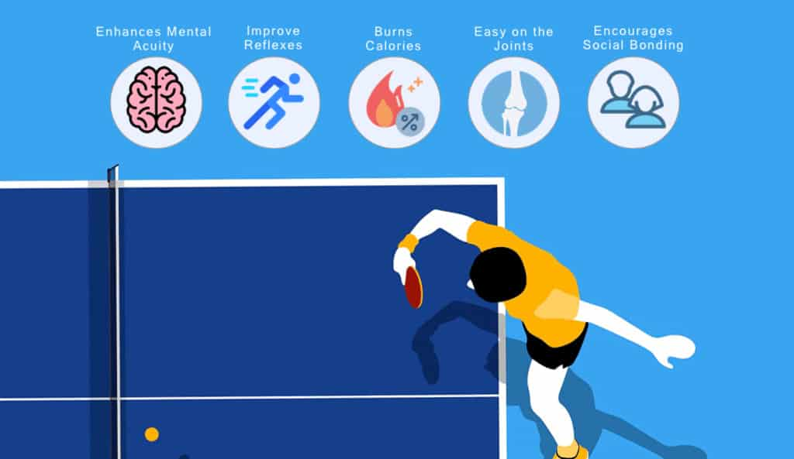

Historia del Ping Pong
El ping pong es un deporte nacido en Inglaterra en el siglo XIX, que se ha convertido en uno de los juegos más populares a nivel mundial. Con una combinación de velocidad y estrategia, ha cautivado a jugadores de todas las edades.
Técnicas Básicas
- Saque: El primer golpe que define el juego.
- Drive: Golpe de derecha para controlar velocidad y precisión.
- Topspin: Técnica avanzada que añade efecto a la pelota.
Beneficios del Ping Pong
Este deporte ayuda a mejorar la concentración, los reflejos y la coordinación. Además, es una excelente forma de mantenerse activo físicamente.
Beneficios clave:
- Mejora la agilidad mental.
- Aumenta la coordinación mano-ojo.
- Favorece la actividad física sin impacto fuerte.
- Ayuda a socializar y mejorar la concentración.
Curiosidades del Ping Pong
¿Sabías que el ping pong es considerado uno de los deportes más rápidos del mundo? ¡La bola puede alcanzar velocidades sorprendentes!
- Debutó como deporte olímpico en Seúl 1988.
- Es el tercer deporte con más practicantes federados del mundo.
- Es uno de los deportes en los que la altura no importa.
- El número de lesiones posibles es inferior.
- Según la NASA, es el deporte más complicado que un ser humano puede practicar.
- La pelota puede alcanzar velocidades de más de 100 km/h, y los jugadores deben reaccionar en una fracción de segundo